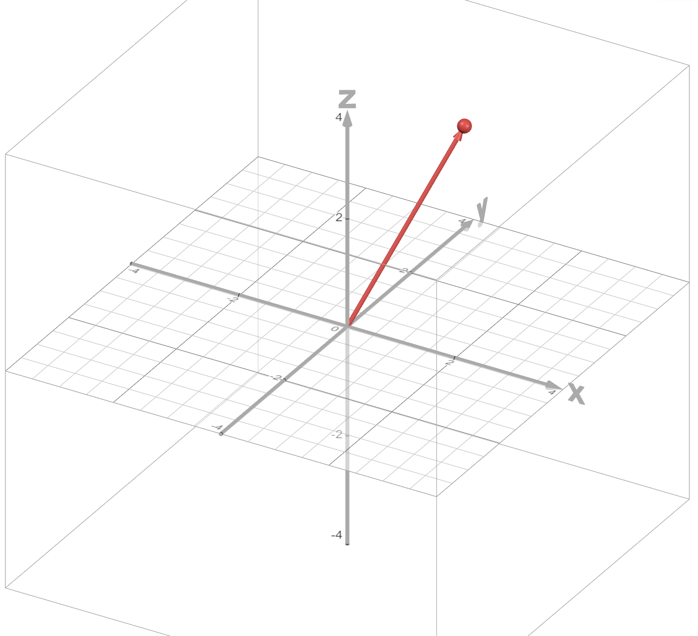
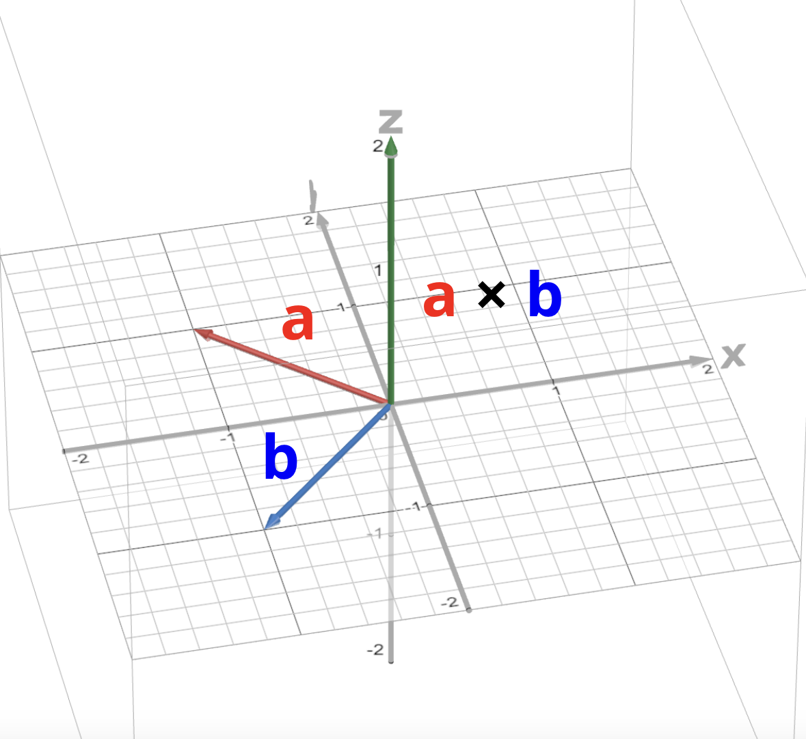

unnamed multivar website: Interactive and simple multivariable calculus explanations!
This is a work in progress, and a continuation of unnamed calc website, my website for single-variable calculus explanations.
Table of Contents
Website Info (start here!)
Units
Credits
Website Update History (Last update: )
Important: You might have to refresh the tab to view the latest updates to this website.
2025-??-??: Initial Release
This is the first version of this website to be released. It features some explanations about vectors and the 3D coordinate system.
Website Content
- Unit 1: Vectors and 3D Space: In order to understand many of the concepts in multivariable calculus, you need to know about vectors and how to visualize graphs in 3D space. That’s what this unit is for!
- Guest Explanations: Why should I be the only one making calculus explanations? I plan on letting some of my friends contribute their own calculus explanations to this website. This first release comes with three explanations (Green’s Theorem, Stokes’ Theorem, and Generalized Stokes’ Theorem) from one of my friends Sami.
Website Settings
Switch to a dark theme for those of you studying calculus late at night! (This setting does not affect any of the images on this page, so they will stay bright.)
If the bright images in dark mode bother you, you can invert the colors of graphs using this setting. Warning: this will change the colors of points and curves on each graph, making graph captions inaccurate in some cases.
Scientific Notation Format
Control the way very large and small numbers are displayed on this website. (Primarily intended for those of you who enjoy incremental games!)
What Is This Website?
A note about links on this page: Internal links (links that bring you to another spot on this page) are colored in light blue. External links (links that open a different website) are colored in dark blue. External links will always open in a new tab.
This is a continuation of my single-variable calculus website, unnamed calc website, but this time with multivariable calculus! You can look at that page for more information on what this website is and why I made it.
This progress table is based on the Stewart Calculus textbook.
| Unit | Progress |
|---|---|
| 12. Vectors and the Geometry of Space | 6/6 |
| 13. Vector Functions | 0/4 |
| 14. Partial Derivatives | 0/8 |
| 15. Multiple Integrals | 0/10 |
| 16. Vector Calculus | 0/9 |
| All Units |
Unit 1: Vectors and 3D Space
Vector Basics
Multivariable calculus involves functions that have multiple inputs or output a list of multiple numbers. Because of this, the concept of vectors appears a lot in multivariable calculus.
There are two ways of thinking about what a vector is:
- A vector is a list of numbers (but can sometimes contain other things).
- A vector is a quantity with magnitude and direction.
I’m going to focus on the second way of thinking about vectors: that a vector is a quantity with magnitude and direction. What exactly does that mean? Usually, we think of vectors graphically as arrows on the coordinate plane.
I will be discussing 2D vectors here (vectors with 2 values that can be drawn in 2 dimensions), but a lot of the concepts are similar for 3D vectors and vectors with even more dimensions.

The arrow from point A to point B is a vector since it has a magnitude (i.e. length) and a direction. It is a 2D vector since it is on a 2-dimensional coordinate plane. (Note: vectors can begin anywhere on the coordinate plane. In this diagram, point A is at the origin, but it doesn’t have to be. What determines the vector is the displacement between the two points.)
2D vectors have an \(x\)-component and a \(y\)-component. The \(x\)-component is the horizontal displacement of the vector and the \(y\)-component is the vertical displacement. In the diagram above, the vector has an \(x\)-component of 3 and a \(y\)-component of 4. The \(x\)-component and \(y\)-component can also be negative (represented by an arrow pointing to the left or down respectively).
Vectors are usually notated with a letter in bold, such as \(\mathbf{v}\). There are multiple ways to notate the components of a vector. One way is to write them like coordinates, so for example the vector in the above diagram is \(\mathbf{v} = (3, 4)\). The first value is the \(x\)-component and the second value is the \(y\)-component of the vector.
Another way is to write the vector in terms of the unit vectors \(\mathbf{i} = (1, 0)\) and \(\mathbf{j} = (0, 1)\). In this notation, our vector can be written as \(\mathbf{v} = (3, 4) = (3, 0) + (0, 4) = 3\mathbf{i} + 4\mathbf{j}\). The coefficient of \(\mathbf{i}\) is the \(x\)-component and the coefficient of \(\mathbf{j}\) is the \(y\)-component of the vector.
To find the magnitude (i.e. length) of a vector (denoted by \(||\mathbf{v}||\)), we can use the Pythagorean Theorem. Notice how in the diagram above, the \(x\)- and \(y\)-components form a right triangle with the vector. In this case, the magnitude of the vector \(\mathbf{v} = (3, 4)\) is \(||\mathbf{v}|| = \sqrt{3^2 + 4^2} = 5\).
Vector operations
We can multiply a vector by a scalar (i.e. a single number). To do that, we just multiply each component of the vector by the scalar. If \(\mathbf{v} = (1, 2)\), then \(4\mathbf{v} = (4\cdot 1, 4\cdot 2) = (4, 8)\). This scalar can also be -1, i.e. we can find the negative of a vector by multiplying all components by -1. In our example, \(-\mathbf{v} = (-1, -2)\).
We can add two vectors by adding their components together. For example, if \(\mathbf{v} = (1, 2)\) and \(\mathbf{w} = (3, 4)\), then \(\mathbf{v} + \mathbf{w} = (1 + 3, 2 + 4) = (4, 6)\).
To add two vectors visually, first place the tail of the second vector at the head of the first vector. Then the sum of the vectors will be the vector that goes from the tail of the first vector to the head of the second vector.
Similarly, we can subtract two vectors by subtracting their components. If \(\mathbf{v} = (1, 2)\) and \(\mathbf{w} = (3, 4)\), then \(\mathbf{w} - \mathbf{v} = (3 - 1, 4 - 2) = (2, 2)\).
There are two ways to visualize this: the first is to add the vectors \(\mathbf{w}\) and \(-\mathbf{v}\) to get \(\mathbf{w} - \mathbf{v}\).

The second way is to draw the vectors for \(\mathbf{v}\) and \(\mathbf{w}\). The vector that goes from the head of \(\mathbf{v}\) to the head of \(\mathbf{w}\) is \(\mathbf{w} - \mathbf{v}\).
This diagram shows that \(\mathbf{v} + (\mathbf{w} - \mathbf{v}) = \mathbf{w}\).
The 3D Coordinate System
In previous calculus classes, you dealt with functions involving a single input and a single output. These are known as single-variable functions, and the way we typically visualize them is with 2-dimensional graphs: one dimension for the input variable and one dimension for the output variable.
But in multivariable calculus, we often deal with functions with more than one input (these are known as multivariable functions). To visualize these functions, we need more than 2 dimensions!
Often, we use 3-dimensional graphs to visualize functions with two inputs. But how do 3D graphs work? That’s what I’m going to discuss now!
In two-dimensional graphs, we have two axes: the \(x\)-axis and the \(y\)-axis. When we introduce a third dimension, we need to add a new axis: the \(z\)-axis, that is perpendicular to the other two axes.

In two dimensions, the point \((x, y)\) would be plotted \(x\) units along the \(x\)-axis and \(y\) units along the \(y\)-axis. In three dimensions, we do something similar: the point \((x, y, z)\) would be plotted \(x\) units along the \(x\)-axis, \(y\) units along the \(y\)-axis, and \(z\) units along the \(z\)-axis.

This is the point \((\class{blue}{1}, \class{green}{2}, \class{purple}{3})\) plotted in 3D space. It is plotted 1 unit along the \(x\)-axis, 2 units along the \(y\)-axis, and 3 units along the \(z\)-axis.
We can also create vectors in 3D space. For example, this is the vector \((1, 2, 3)\):
In 3D space, the unit vectors are \(\mathbf{i} = (1, 0, 0)\), \(\mathbf{j} = (0, 1, 0)\), and \(\mathbf{k} = (0, 0, 1)\).
Vectors: Dot Product
There are some operations we can perform between two vectors. One of the most common operations is the dot product. The dot product of two vectors \(\mathbf{a}\) and \(\mathbf{b}\) is denoted by \(\mathbf{a} \cdot \mathbf{b}\).
There are two ways of thinking of the dot product.
The dot product as a sum of products
To find the dot product of two vectors, you multiply corresponding components together, then sum up all of the products. Here’s an example:
Notice that the result of a dot product is a scalar (a single number), not a vector.
The geometric meaning of the dot product
The dot product can also be found with this formula:
In this formula, \(\theta\) is the angle between the two vectors \(\mathbf{a}\) and \(\mathbf{b}\).
Notice that \(\cos(\theta)\) is close to 1 if \(\theta\) is close to 0, and \(\cos(\theta)\) is close to 0 if \(\theta\) is close to 90 degrees. So in general, if two vectors are pointing in roughly the same direction, their dot product will be larger. If two vectors are pointing in exactly the same direction, then the dot product is the product of the vectors’ magnitudes.
If \(\theta\) is exactly 90 degrees (or \(\frac{\pi}{2}\) radians), then \(\cos(\theta) = 0\). This means that the dot product between two perpendicular vectors is zero. Two vectors are called orthogonal if this is the case (i.e. if \(\mathbf{a} \cdot \mathbf{b} = 0\), then \(\mathbf{a}\) and \(\mathbf{b}\) are orthogonal vectors).
The dot product can also be negative if \(\cos(\theta)\) is negative. This happens when \(\theta\) is in between 90 and 180 degrees (\(\frac{\pi}{2}\) and \(\pi\) radians).
Play around with these two unit vectors (vectors with magnitude 1). What do you notice about the dot product?
Control the vectors’ angles using these sliders:
\(\theta \approx\)
\(\theta \approx\)
Dot Product \(\approx\)
Vectors: Cross Product
The cross product is another operation we can perform between two vectors. The cross product of \(\mathbf{a}\) and \(\mathbf{b}\) is denoted by \(\mathbf{a} \times \mathbf{b}\).
While the dot product works with vectors with any number of dimensions (as long as the two vectors have the same number of dimensions), the cross product only works with two 3D vectors.
While the dot product of two vectors is a scalar, the cross product of two vectors is another vector. Specifically, the cross product of two vectors is a third vector that is perpendicular to the other two vectors.
There are once again two formulas for the cross product.
The cross product as a determinant
The cross product of two vectors can be calculated with a few multiplications and subtractions. If \(\mathbf{a} = (a_1, a_2, a_3)\) and \(\mathbf{b} = (b_1, b_2, b_3)\), then:
This is not an easy formula to remember! Luckily, there is an easier way to remember this, but it does require you to know a little bit about matrices.
This formula can be written as the determinant of a \(3\times 3\) matrix as follows:
The first row of the matrix contains the unit vectors, the second row of the matrix contains the components of the first vector, and the third row contains the components of the second vector.
A matrix is a 2D grid of numbers. Here’s an example of a matrix:
A matrix that has \(m\) rows and \(n\) columns is known as an \(m \times n\) matrix.
Imagine we have this \(2 \times 2\) matrix:
The determinant of this matrix, denoted by \(\det(A)\), is calculated as follows:
The determinant of a \(3 \times 3\) matrix is more complicated:
That just looks like a huge mess at first! Let’s break it down.
The first term in the sum is:
Notice how the exponent on the -1 term is \(\class{red}{1} + \class{blue}{1}\), while the coefficient in front of it is \(a_{\class{red}{1}\class{blue}{1}}\), corresponding to the element on the 1st row and 1st column of the matrix.
What about the determinant part? Notice how we’re finding the determinant of a smaller \(2 \times 2\) matrix. This matrix is just the \(3 \times 3\) matrix \(A\) but without the elements in the 1st row and the 1st column.
The next term is:
Once again, the exponent on the -1 term (\(\class{red}{1} + \class{blue}{2}\)) is the sum of the row and column number of the coefficient \(a_{\class{red}{1}\class{blue}{2}}\). We are multiplying these terms by the determinant of a \(2 \times 2\) matrix which is matrix \(A\) but without the 1st row and 2nd column.
Finally, we see this pattern continue with the last term:
The exponent on the -1 is the sum of the row and column number, and we are once again multiplying by a modified version of matrix \(A\) without the 1st row and 3rd column.
However, this isn’t the only way we can calculate the determinant of \(A\). In the previous example, we used what’s known as the Laplace expansion along the first row of the matrix (since the coefficients \(a_{11}\), \(a_{12}\), \(a_{13}\) come from the first row of matrix \(A\)).
The Laplace expansion works for any row or any column of the matrix! For example, here’s the expansion along the 2nd column:
The geometric meaning of the cross product
Just like the dot product, there is a geometric formula for the cross product:
\(\theta\) is the angle between \(\mathbf{a}\) and \(\mathbf{b}\), and \(\mathbf{n}\) is a unit vector perpendicular to both \(\mathbf{a}\) and \(\mathbf{b}\) (the exact vector to use is based on the right-hand rule - more on that later).
The cross product of two vectors is a third vector that is perpendicular to both of them. However, in 3D space, there are two vectors that are perpendicular to any set of two nonzero vectors. How do we know which one to use?
That’s what the right-hand rule tells us. If you point the index finger of your right hand in the direction of \(\mathbf{a}\), then point your middle finger in the direction of \(\mathbf{b}\), then extend your thumb, your thumb will point in the direction of \(\mathbf{a} \times \mathbf{b}\).
Here’s an example of how we would find the cross product of two vectors.
The cross product \(\mathbf{a} \times \mathbf{b}\) is perpendicular to both the vectors \(\mathbf{a}\) and \(\mathbf{b}\).
Problem: What is the cross product of the vectors \(\mathbf{a} = (5, -2, 8)\) and \(\mathbf{b} = (10, 0, 1)\)?
Using the formula directly:
Using the determinant form of the formula:
Don’t forget the negative sign before the second term when calculating the determinant (in this case, the coefficient of \(\mathbf{j}\))!
3D Space: Equations of Lines
How do we graph a line in 3D space? Before we answer this, let’s first think about how we could graph a line in 2D.
In two dimensions, we can graph a line by choosing a point on that line, then specifying the slope of the line. This is the point-slope form of a line: the line that passes through the point \((x_0, y_0)\) with slope \(m\) is:
In three dimensions, however, we can’t just describe the slope of a line with one number. Instead, we need to use a 3D vector to describe the direction that the line goes in.
So what we could do instead is take two points that are on the line, then draw a vector between those two. Let’s see how this would work in 2D first.
Let’s say we want to find the equation of the line that passes through point \(A = (1, 2)\) and point \(B = (2, 5)\). We can get a vector parallel to this line by subtracting one point from the other. In this case, that vector would be \(\mathbf{v} = (2-1, 5-2) = (1, 3)\).

Now let’s imagine a point moving with this velocity vector. As time passes, the point will trace out our line.
How can we describe the movement of this point with a function? We can use a vector-valued function - a function that outputs a vector.
Imagine a point at point \(A\) and moving towards point \(B\). Its velocity vector would be equal to the vector \(\mathbf{v}\) we found before. Its position at time \(t\) would be:
\(\mathbf{a}\) is the position vector corresponding to point \(A\) (in this case, \((1, 2)\)).
This is known as the vector form for the equation of a line. As \(t\) ranges across all real numbers (negative and positive), the point corresponding to \(f(t)\) will draw out the line.
\(t =\)
We can generalize this concept to three dimensions. Let me demonstrate this with an example:
Problem: What is the equation of the line that passes through the points \(A = (-2, 3, 2)\) and \(B = (3, 0, 1)\)?
First, we need to find a vector that is parallel to the line. The easiest way to do this is to find the vector that goes from point \(A\) to point \(B\) (since this vector is on the line, it will also be parallel to the line). To find this vector, we subtract the coordinates of point \(A\) from point \(B\).

The vector \(\class{green}{\mathbf{v} = (5, -3, -1)}\) starts at point \(A\) and ends at point \(B\), and it is parallel to the line since it’s on the line.
The vector form for the equation of a line in 3D space is:
\((x_0, y_0, z_0)\) is a point on the line (with \(\mathbf{r_0}\) being the corresponding position vector), and \(\mathbf{v} = (a, b, c)\) is a vector that is parallel to the line. Just like with the 2D equation, as \(t\) ranges across all real numbers, the vector \(\mathbf{r}\) traces out the line.
Back to our example now. \(\mathbf{r_0}\) can be the position vector corresponding to either of our points. So for our example, the vector form based on point \(A\) is:
And the vector form based on point \(B\) is:
This is not the only way we can describe a line in 3D. We can convert this vector form into a set of parametric equations:
This is the parametric form for the equation of a line. For our problem, the parametric form based on point \(A\) is:
Based on point \(B\), the parametric equations are:
Finally, if we solve for \(t\) in each of the equations in the parametric form, we get these equations:
The right-hand sides of all three of these equations are equal to \(t\), so they are equal to each other. Therefore:
This is the symmetric equation of a line. In this case, the symmetric equations that pass through \((-2, 3, 2)\) and \((3, 0, 1)\) are:
This equation is using point \(A\) for the coordinates \((x_0, y_0, z_0)\).
This equation is using point \(B\) for the coordinates \((x_0, y_0, z_0)\).
3D Space: Equations of Planes
We can also find the equations of planes in 3D space.
One way to uniquely identify a plane in 3D is to specify three points on that plane (as long as they’re not on the same line). However, to actually find the equation of a plane, there is another, more helpful way to define a plane.
All we need is one point on the plane and a normal vector to that plane (a vector perpendicular to the plane).

We can define a plane using a point on the plane and a normal vector.
Let’s call this point \(P_0\), the vector corresponding to this point \(\mathbf{r_0}\), and the normal vector \(\mathbf{n}\).
Why is this useful? Because if we choose a second point on the plane, then draw a vector from the first point to the second, that vector will lie completely within the plane. So this vector will be orthogonal to the normal vector, which means that the dot product of the two vectors will be zero.

The normal vector and the vector between the two points are orthogonal, so their dot product is zero.
So we can define this plane as the set of all possible points \(P\) such that the vector between \(P\) and \(P_0\) is orthogonal to the normal vector (i.e. the dot product is zero). If we define the vector \(\mathbf{r}\) to be the vector corresponding to \(P\), this means:
This is the vector equation of a plane. If we write out the components of the vectors with \(\mathbf{n} = (a, b, c)\), \(\mathbf{r} = (x, y, z)\), and \(\mathbf{r_0} = (x_0, y_0, z_0)\), we get:
This is the scalar equation of a plane.
Problem: What is the equation of the plane that passes through the points \(A = (4, -2, 3)\), \(B = (0, 1, 3)\), and \(C = (-1, -5, 1)\)?
First, we need to find a normal vector for this plane. How could we do this?
If we had two vectors that were on the plane, then found the cross product of those two vectors, that would give us a vector that is perpendicular to both of those vectors (and the plane itself), which would be a normal vector!
So let’s find two vectors that are on the plane. We can do that by finding vectors between two of our points. Here’s the vector that goes from point \(A\) to point \(B\):
And here’s the vector that goes from point \(A\) to point \(C\):
These are not the only two vectors we can use; there are many more possible pairs of points we can use to define our vectors.
Now let’s find the cross product of these vectors:
Remember that in the scalar equation of the plane \((a,b,c)\) is the normal vector and \((x_0, y_0, z_0)\) is any point on the plane (we’ll use point \(A\) for this example, but points \(B\) and \(C\) would also work). So the equation is:
3D Space: Quadric Surfaces
Quadric surfaces are graphs in 3D space that are defined by an equation in the form:
Here, \(P(x, y, z)\) is a quadratic polynomial in terms of \(x\), \(y\), and \(z\). This can also be written as:
The values \(A\) through \(J\) are constants.
Here are some examples of different types of quadric surfaces, along with their general equations.
Ellipsoid, \(\displaystyle\frac{x^2}{a^2} + \frac{y^2}{b^2} + \frac{z^2}{c^2} = 1\)

Note: If \(a = b = c\), then the ellipsoid is a sphere.
Cone, \(\displaystyle\frac{x^2}{a^2} + \frac{y^2}{b^2} = \frac{z^2}{c^2}\)
Cylinder, \(\displaystyle\frac{x^2}{a^2} + \frac{y^2}{b^2} = 1\)

Hyperboloid of One Sheet, \(\displaystyle\frac{x^2}{a^2} + \frac{y^2}{b^2} - \frac{z^2}{c^2} = 1\)
Hyperboloid of Two Sheets, \(\displaystyle-\frac{x^2}{a^2} - \frac{y^2}{b^2} + \frac{z^2}{c^2} = 1\)

Elliptic Paraboloid, \(\displaystyle\frac{x^2}{a^2} + \frac{y^2}{b^2} = \frac{z}{c}\)
Hyperbolic Paraboloid, \(\displaystyle\frac{x^2}{a^2} - \frac{y^2}{b^2} = \frac{z}{c}\)
Unit 2: Vector-Valued Functions
Vector-valued functions are already covered in some detail in Unit 9 of unnamed calc website, so for now, I’m not going to add content to this unit. I recognize that there are some vector-valued function topics that aren’t covered yet on unnamed calc website (such as 3D vectors), so I will eventually start working on this unit.
Guest Explanations
These are explanations written by people other than me, typically my friends. (Note: These explanations might involve concepts or terminology not yet covered on this website.)
Green’s Theorem
Explanation written by Sami Khan
Formal definition of Green’s Theorem
Green’s Theorem states that the line integral of the vector field \(F\) over the boundary of your region \(D\) is equivalent to the double integral of the curl of the vector field \(F\) over the region \(D\). Green’s Theorem is the 2D incarnation of the Generalized Stokes Theorem.
Intuitive explanation of Green’s Theorem
Essentially what Green’s theorem is doing is displaying that the combination of local data is equivalent to the global phenomenon. The curl of the vector field \(F\) is local meaning it is dependent on the location of the point in \(F\). Essentially what the double integral is doing is just combining the curl over the region \(D\) and saying that it is equal to the line integral of the vector field over the boundary curve of the region.
Stokes’ Theorem
Explanation written by Sami Khan
Formal definition of Stokes’ Theorem
Stokes’ Theorem is another incarnation of generalized stokes theorem. Stokes’ Theorem exists in 3D space. Stokes’ Theorem relates a line integral to a surface integral stating that the line integral of the vector field \(F\) dotted with the parameterized function of the closed boundary curve \(C\) over said curve is equivalent to the surface integral (a double integral over a 3D surface) of the curl of \(F\) over the surface \(S\). One important thing to know is that \(S\) can be any surface with the boundary curve \(C\).
Intuitive explanation of Stokes’ Theorem
Visualize a surface \(S\) in some vector field \(F\). Each point on \(S\) has some curl associated with it. Now think about any point \(P\) within the surface but not on the boundary. This point \(P\) has its own curl and is surrounded by points which have similar curl. Now these curls end up cancelling out everywhere except the boundary curve of the surface. Because of this the surface integral of the curl of \(F\) over \(S\) is equivalent to the line integral of \(F\) over the boundary curve.
Generalized Stokes’ Theorem
Explanation written by Sami Khan
(Note: Generalized Stokes’ Theorem is considered beyond the scope of multivariable calculus.)
Formal definition of Generalized Stokes’ Theorem
Generalized Stokes’ Theorem is generalized for \(n\) dimensions. The generalized form of this theorem states that the integral of some differential form over the boundary of your manifold is equivalent to the integral of the differential forms exterior derivative over the entirety of the manifold.
Intuitive explanation of Stokes’ Theorem
Imagine an \(n\)-dimensional infinitesimal parallelotope composed of \(n\) vectors. Now this parallelotope has some average flux. Now imagine you compose your manifold of an infinite amount of these parallelepipeds composing your manifold. Essentially the combination of these average fluxes (via integration) of all the parallelepipeds within the manifold cancel out leaving us with the overall flux on the boundary of the manifold.
Credits / Special Thanks
All code, diagrams, and explanations (except those in the “Guest Explanations” section) were created by Eldrick Chen (also known as “calculus gaming”). This page is open-source - view the GitHub repository here.
👋 Hello! I’m Eldrick, and I originally started making calculus websites as a passion project to help people at my school.
Despite being (mostly) the only one to directly work on this project, it wouldn’t have been possible if it wasn’t for the work of many others. Here are some people and organizations I want to credit for allowing me to build this website in the first place.
Tools used to create this page
-
Tools used to create the images and animations on this page:
- Desmos Graphing Calculator for 2D graphs
- Desmos 3D Graphing Calculator for 3D graphs
- Google Drawings for extra annotations, other types of diagrams, and sidebar icons
- imgonline.tools to make the website logo transparent
- JavaScript libraries used to make this website do cool things (these are all licensed under Apache License 2.0):
Fonts used on this page
- The font used for this page is Monospace Typewriter, was created by Manfred Klein.
- The font used in some of my diagrams is Open Sans.
Special thanks
- Resources that I used to learn calculus: Huge thanks to Khan Academy and Paul’s Online Notes for providing multivariable calculus lessons for free, allowing me to create this website in the first place!
-
Thanks to the creators of the Fast Inverse Square Root algorithm. I was inspired to create calculus websites after creating a page explaining this algorithm. Researching this algorithm ignited my passion for calculus and inspired me to create calculus websites!
- Thanks to YouTuber Nemean for introducing me to the Fast Inverse Square Root algorithm with his amazing video on the subject.
- Thanks to Hevipelle and many others for creating the awesome game Antimatter Dimensions. This game inspired me to use this font for this website and also inspired the idea of naming each update in the update notes with a word or phrase rather than with a version number. Both of these things are done in Antimatter Dimensions and I’ve decided to do them on my website too!
Legal information
- View Monospace Typewriter (this font)’s license here.
- Open Sans is licensed under the Open Font License. License details on Google Fonts
- Math.js copyright notice:
-
math.js https://github.com/josdejong/mathjs Copyright (C) 2013-2023 Jos de Jong <wjosdejong@gmail.com> Licensed under the Apache License, Version 2.0 (the "License"); you may not use this file except in compliance with the License. You may obtain a copy of the License at https://www.apache.org/licenses/LICENSE-2.0 Unless required by applicable law or agreed to in writing, software distributed under the License is distributed on an "AS IS" BASIS, WITHOUT WARRANTIES OR CONDITIONS OF ANY KIND, either express or implied. See the License for the specific language governing permissions and limitations under the License.
-